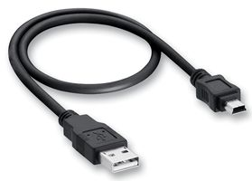
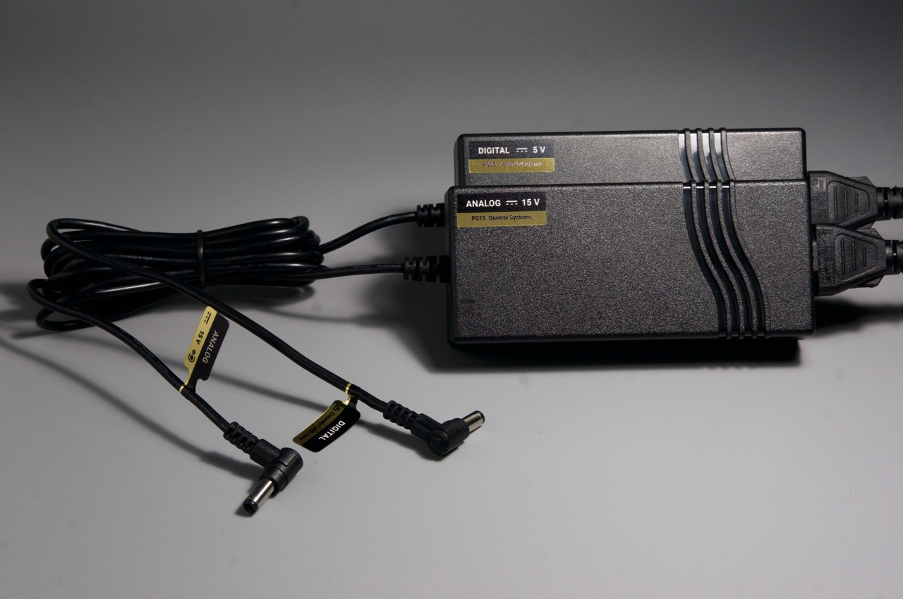

Getting Started Guide#
This Getting started document will guide you through the first configuration and test of the q8 unit attached to a Qontrol motherboard.
The operations described in this guide require:
a Qontrol controller (e.g. Q8iv or Q8)
a Qontrol motherboard (e.g. BP8)
the corresponding power supply (e.g. PS15KIT)
a computer connected to the internet to let the system download the serial port USB drivers
(optionally) a program for serial port communication (e.g. Teraterm for windows, CoolTerm for Mac Osx, Linux)
Connection of the unit#
This procedure is valid for both the Q8 and the Q8iv products.
Insert the Q8iv (or any other compatible control unit) in one of the backplanes/motherboards (e.g. BP8):
In the Q8iV the 5 leds indicate (from the bottom): pwr, rx, tx, activity, err. In the Q8b the 3 leds indicate: pwr, activity, err
Connect the backplane (motherboard) unit to the computer using a cable/adapter with a USB mini b female plug at one of the two ends, like the one shown below:
Power the unit, using a compatible power supply (e.g. PS15KIT):
Al the side LEDs in the units should progressively turn on and off again leaving only the bottom green LEDs on, while the units are in idle.
{kind=link}
{kind=link}
{kind=link}
{kind=link}
Whole system:
{kind=link}
Configuration of the serial communication#
Controlling the unit using the provided Qontrol API serial communication commands#
This API provides also a command line interface for direct communication with the Qontrol unit. The program is called run_interactive_shell(). To run it follow these steps: start python, import qontrol and run the interactive shell.
- ::
$ python
>>> import qontrol
>>> qontrol.run_interactive_shell()
Select your controller from the list of available serial devices and you are ready to go.
Controlling the unit using a serial communication software#
In addition, serial communication software in any operating system (OS) can be used to control the units, some examples:
Teraterm (Windows)
CoolTerm (Mac)
Terminal/Command line (Linux)
General Configuration settings.
Serial parameters settings :
Setting |
Value |
|---|---|
Data bits |
8 |
Stop bit |
1 |
Par. check |
None |
Flow ctrl. |
None |
Baud rate |
115200 |
Windows Teraterm Configuration
Mac OSX CoolTerm Configuration
Open a Terminal
check the name of the device with the command:
ls /dev/tty.usb*
Example of output: /dev/tty.usbserial-FT31EUVZ
the name “FT31EUVZ” identifies the connection to the Qontrol motherboard
Open CoolTerm and select options
{kind=link}
Select the correct device and the proper settings
Open CoolTerm and select the appropriate options
{kind=link}
Select Ok and start typing the commands
{kind=link}
Linux Command Line
In Linux is also possible to use terminal software such as minicorn
Check the name of the device
ls /dev/tty.usb*
Serial ports devices will appear as /dev/ttyS#
To change the serial port configuration use the command ‘ssty’, use the command “man stty” for specific operation details
Example to set the Baudrate to 115200 and odd parity stty -F /dev/ttyS# 115200 parodd
Issue Comands using the “echo” command echo ‘vipall?’ > /dev/ttyusb#
Read the data with cat: cat /dev/ttyusb#
Main commands and error codes#
From the serial interface you can always obtain te list of commands by typing:
- ::
> help
CORE COMMAND SET
Set voltage of a specific “port” to “value” (V) -> v[port]=[value]
Set current of a specific “port” to “value” (mA) -> i[port]=[value]
Read voltage of a specific “port” (V) - > v[port]?
Read current of a specific “port” (mA) - > i[port]?
Read voltage current and power on all the ports (V, mA, mW)-> vipall?
Set max voltage limit (V) to a “value” of a specific “port” -> vmax[port]=[value]
Set max current limit (mA) to a “value” of a specific “port” -> imax[port]=[value]
Error Code |
Description |
|---|---|
00 |
Unknown error |
01 |
Overvoltage |
02 |
Overcurrent |
03 |
Power error |
04 |
Calibration error |
10 |
Unrecognised command |
11 |
Unrecognised parameter |
12 |
Unrecognised port |
13 |
Operation forbidden |
14:00 |
Instruction buffer overflow |
14:01 |
Single instruction overflow |
15:X0 |
Serial overflow detected |
15:X1 |
Serial framing error detected |
16 |
Internal software error |
Frequently asked questions (FAQ) and basic troubleshooting#
** Which operating systems are supported? **
Our Python API can be used on any modern OS. All of them that can control a serial port can also use our products in any other language, if you are willing to program this yourself.
** Why does the backplane error light turn on when drivers are activated?**
The LSD is inserted the wrong way around!
Running the example code#
The example code example.py can be found in the intallation directory of qontrol.py.
To run it sympy type:
$ python example.py
The example will set some voltages on your device so it is important to check that no sensitive equipment is connected when running it.
If the example code runs successfully, the lights on your qontroller will flash as commands are transmitted, and output channels are energised. The qontroller’s device ID will be read out, as well as its number of channels. The voltage on each channel will be briefly set to the channel’s number, then return to zero (e.g. channel 3 is set to 3 V). The current of each channel will be read out. Next, we’ll take a look at exactly what’s inside.
API basics#
First, we read in the qontrol.py API with an import call.
import qontrol
To initialise an output device (or daisy-chain), like a Q8iv, first use a definition like
q = qontrol.QXOutput(serial_port_name = "COM1")
where q is our qontroller object, which stores information about the hardware, such as its device ID (q.device_id) and number of channels (q.n_chs), and handles all communications and commands. COM1 is an example of what the connected serial port name might be on Windows.
Port numbers greater than 10 must be written like
//./COM42.
On Mac or Linux, this will look something like
/dev/tty.usbserial-FT123ABC.
When your code is done with the hardware, it’s good practice to close the connection with a call to
q.close()
Controlling outputs, and reading inputs is easy.
Writing to the qontroller object’s v or i arrays (using standard Python array indexing) sets the output for channel with that index.
Reading from those arrays reads the input values back from the hardware. For example, we can set the voltage on output channel 3 to 4.5V and read back the current (in mA) assigning the value to the variable “measured_current” with the code:
q.v[3] = 4.5
measured_current = q.i[3]
We can do bulk changes to channels using slices.
q.v[2:5] = 4.5
measured_current = q.i[2:5]
The slice character in Python, :, means either “everything between two indices” (e.g. v[2:5]), “everything from the beginning until an index” (e.g. v[:5]), or “everything from an index until the end” (e.g. v[2:]).
Notes and disclaimer#
If you find an error in this document, or have suggestions for how we could make it better, please do get in touch with us at support@qontrol.co.uk with your comments.
The information provided in this document is believed to be accurate at the time of publication. It is provided for information only, ‘as is’, and without guarantee of any kind.
Qontrol Systems LLP, its subsidiaries and associates accept no liability for damage to equipment, hardware, or the customer application, or for labour costs incurred due to the information contained in this document.